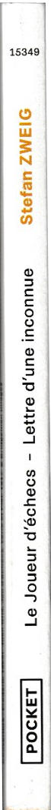
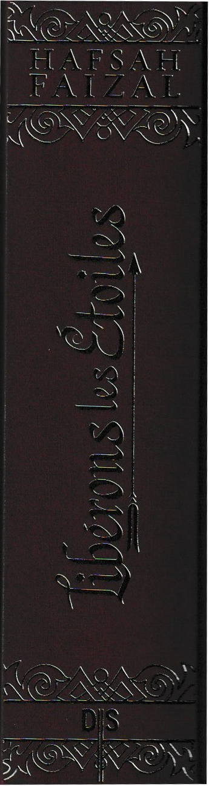
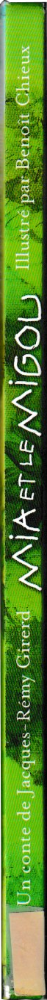
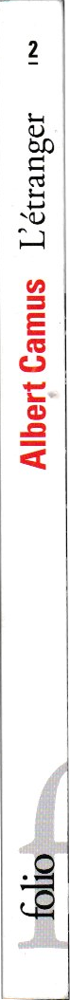
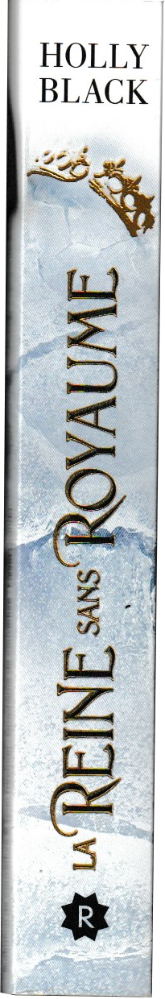
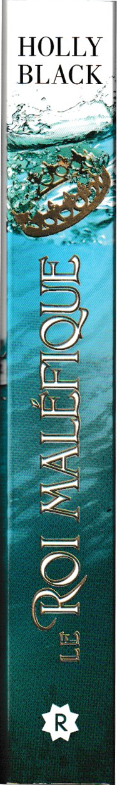
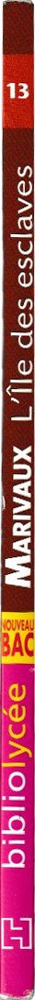
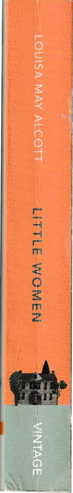
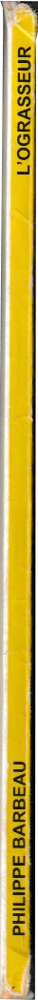

All you got to do is scroll to the side and hover on books to see what I thought about the book !

Macbeth - Shakespeare
Read

Le monde selon Sisun - Chung Serang
Read
I find it fascinating how every member of your family or even your entourage knows a different part of yourself that makes a whole.
This book was so soothing and new for me. It was my cousin (hey love!) that gifted it to me, as well as several other books that
I cannot wait to read !! I tend to stay in my comfort zone when reading but it was a very pleasant surprise to like this one. If
you're in need to be brought back to a warm and refreshing environment go for it. It helped me go past my reading slump, I took my time reading it.
It made me think about my own family and friends (that are all so sweet) but also about the more ignored themes like: racism (to see all minorities are facing the same hardships *sigh*),
agressions on women and toxic relationships and manipulation, the power Mathias had over Sisun because he was white and famous
(like people were condemning Sisun for getting away and "causing his death" when he was just a dramatic freak).

Le trône du prisonier - Holly Black
Read

L'héritier trahi - Holly Black
Read

Dark heir - C.S. Pacat
Read
Le petit prince - Antoine de Saint-Exupéry
Read
Les histoires des Prophètes - Amina Rekad
Read

Le joueur d'échec & Lettre d'une inconnue - Stefan Zweig
Read

Cleopatra and Frankenstein - Coco Mellors
Read
Le grand vizir iznogoud - Goscinny-Tabary
Read

Hamlet - Shakespeare
Read

The Picture of Dorian Gray - Oscar Wilde
Read on July 17 2024
How can someone DRASTICALLY change like so? That is scary! I really hope no human can do so, but
I know that’s being delusional. If only lord Henry, aka Prince Paradox, had shut is mouth and just went! And
Oh Basil, our precious beloved Basil… A wonder I got to go through the various random enumeration of historical
facts and objects that Dorian came to learn about! That was so long and tedious to read as a French native. The book was clearly an interesting experience but I hope not
as such the as one Dorian read during his lit’le journay. Like imagine if I randomly decided that this book changed me and start doing the craziest things on earth because of it??
(The guy was fully convinced he wasn’t at any moment of fault). The ending was exquisite dramatic and beautiful just as I like ‘em.

Comment le prince Cardan en est venu à détester les histoires - Holly Black
Read 01/12/2023
How delightful to plunge into this universe again. To learn more about Cardan was really comforting. He doesn’t
seem to be such a meanie now? He absolutely loves Jude and that’s, oh so great. I loved the different stories
they were well written and told. I love it, I love it, I love it. And far most, the moment where
Cardan is on earth spending moments with Jude, Viv, Heather and Oak. Plus it was so funny to think of Madoc living there (before I learned how he lived on earth in the prisoners throne)!

The midnight library - Matt Haig
Read 14/10/2023
Learning about a possibly adorable and funny cat and then learning he’s been hit by a car was rough
for a 6th page. A depressed but still hopeful version of 16 wishes. WHY wouldn’t they give her some memories
when she enters a new life, so she’s not having zero clue of whatever she’s doing! I CANNOT WITH THIS STRESS I
HAVE ANXIETY!! I really like Hugo’s theory about life quantum page 144 or so. The last third especially felt like
a letter to a younger self, to encourage her to continue on her “when I grow up I will be” journey and I really loved that.
To finish with, it was such a warm book it healed my innerself.
The one - Nicky Lee
Read

Libérons Les étoiles - Hafsah Faizal
Read 30/08/2023-13/09/2023
Arghhhhh I feel sooo nostalgic. It was sooo great eventhough I struggled to get through it. Everybody almost died or literally did or what?
The Zumra was oh so loveable. And Nasir and Zafira? Oh my I couldn’t breathe they were sooo cute. I add Haider in the list of great villains
(yes. I was seduced). And the WORLD BUILDING? The author did such a great job. Well I just loved it I must say. To be honest I clearly cannot
remember all the things. Over 1400 pages guys that‚Äôs too much for my brain. But I saw a good part of all the hints and it was done sooo very well I‚Äôm glad I read this series üòå

Chasseurs de flammes - Hafsah Faizal
Read 23-26 august 2023
IM INTO IT! At first I was sooo bored and hated Zafira’s chapters but when they arrived at Sharr?
OH. MY. All I needed was Deen to die. Seriously what's the point of being you Deen? (No hate :))And now that the
tension is here‚Ķ I‚Äôm like don‚Äôt stooop. ü§≠.
Anyway I just love Altair! If he dies I stop everything (yes Yasmine I’m talking about yah).
Also the family tree is soooo messed up seriously. At some point I started to reread some pages cause
I was like wait what?. But it was SO GREAT.
I screamed but I screamed LOTS there was too much of EVERYTHING.I absolutely loved it and was pretty much surprised to be sad at Benyamin’s death.
Now trêve de bavardage and give me the next volume I cannot be left with all this tension. Speaking
of tension ... Why is the lion of the night so freaking charismatic, there's no business
for me to be more interested by the villain! But well...Totally understand Anadil.

La chasseuse et l'alchimiste - Allison Saft
Read

Dark rise - C.S. Pacat
Read

King Lear - Shakespeare
Read

La poignée de poussière - Amadou Hampâté Bâ - Rebecca Yarros
Read
Paradise kiss - Ai Yazawa
Read

The importance of being earnest - Oscar Wilde
Read

Animal Farm - George Orwell
Read

La machine infernale - Jean Cocteau
Read

Mia et le migou - Jacques-Rémy Girerd
Read

Five feet apart - Mikki Daughtry, Rachael Lippincott, Tobias Iaconis
Read

My year of rest and relaxation - Ottessa Moshfegh
Read

If we were villains - M.L. Rio
Read
Les fleurs du mal - Baudelaire
Read

Saison d'orages et de silence - Roseanne A. Brown
Read

L'étranger - Albert Camus
Read

Love from Mecca to Medina - S.K. Ali
Read 09/11/2023-26/12/2023
This one seemed WAY better for me than the first one. I STRUGGLED getting through it but in the end I
just gulped it. I think this book was sooo important that I needed to read it at the right time. For my faith (it
was so helpful on an incredible scale, lately I felt really disconnected to Allah and this book just narrowed my
sight of everything +other things ) but also for myself (the married life and how you deal with problems) it
just helped my religionship? as it helped my relationships. It just seemed so realistic I found bits of myself
in every pages. It undid and made me unlearn the fact that human are perfect through faith and don’t have any flaws and
that pilgrimage is easy.

Les impatientes - Djaïli Amadou Amal
Read

Déclaration des droits de la femme et de la citoyenne - Olympe De-Gouges
Read
I DEFINETELY GOT PTSD OVER THIS ONE. I felt like a miserable bureaucrate when I had to learn quotes AND articles for my exams. Thank God it's all over
Incendies - Wajdi Mouawad
Read

L'ami retrouvé - Fred Uhlman
Read

La forme d'une ville change plus vite hélas, que le coeur des humains - Michel Roubau
Read
See how long and boring the title is? I'll just say it didn't help me read it. I only read a few chapter and could absolutely not say anything about it.
Flocons d'amour - John Green, Lauren Myracle, Maureen Johnson
Read
Les sept maris d'Evelyn Hugo - Taylor Jenkins Reid
Read

Love from A to Z - S.K. Ali
Read

Juste la fin du monde - Jean-Luc Lagarce
Read
Studied this book so much I might have ptsd but genuinely liked it and loved understanding new things by studying it

Tortues à l'infini - John Green
Read

Six of crows - Leigh Bardugo
Read

Normal people - Sally Rooney
Read

L'as de coeur - Morgane Moncomble
Read

Le chant des sans repos - Roseanne A. Brown
Read

Gatsby - F. Scott Fitzgerald
Read
Jamais plus - Colleen Hoover
Read
I must say: No wonder why it's the only Colleen Hoover book I own.
Now bear with me because this book has been a journey of opinion. I started to read it a bit before all the controverse.
At the time I didn't took great attention about the story and I liked the book in a "Oh a book about domestic violence that is written in homage to whoever it was for". Then...
I started to get annoyed by a LOT of things: The homeless guy plot? Like why, what, how? The lover who happens (yeah, as if meeting him while he was throwing a tantrum wasn't a redflag) to be a violent guy?
The "to Ellen" letter: should I say I find that Ellen is problematic and having your character writing her odes is questionable? There I said it.
All those show the problem of dark romance in general: romanticising life a bit TOO MUCH. After the controverse, I just think that Colleen Hoover is simply not for me, as this pattern is in all her books. PAS MON DELIRE like we say in France.
The book was more about having a maximum of questionnable things that just annihilated the "being in that type of relationship makes you accept the unacceptable and you need to get out of it" idea I suppose the author wanted to express.
L'attaque des titans - Hajime Isayama
Read

Nos étoiles contraires - John Green
Read
Nous les menteurs - E. Lockhart
Read

I fell in love with hope - Lancali
Read

La reine sans royaume - Holly Black
Read

Le roi maléfique - Holly Black
Read
Les soeurs perdues - Holly Black
Read

Le prince cruel - Holly Black
Read

Qui es tu Alaska - John Green
Read

La duperie de Geunièvre - Kiersten White
Read

Carpe diem - Elsa Marpeau
Read

La ferme aux animaux - George Orwell
Read
It IS crazy how I hated it in french and absolutely loved it (mostly the end) in english! Was it the language, my age?
Perfectly wrong - Sarah Rivens
Read

Captive T.1 & 2- Sarah Rivens
Read
Used to love it when I was younger and dumber but right now if I read it again I’ll feel like I’m
loosing time. Hear me out ! These kind of books are great to laugh with the funny characters and jokes even
hilarious which is mainly WHY I loved them. Nonetheless the toxic dark romance books were just a phase for me (a Wattpad
teenager who swam in those) and it is not the person I am today so IT IS great for my memories and stuff and I keep it
because I loved it and have >great laughs when I think about Ben and others (I am deeply attached to my things) but as a BOOK it
is not for me. PLUS I remember when it was really in the üîûparts I irked so much because I was NOT supposed to be
exposed to these kind of things at THIS AGE. But that’s one of my other growing stories so it is sad but that’s life.
I only hope that Wattpad will work something out to prevent youngsters to be able to access triggering stories as easily as I used to.

Antigone - Jean Anouilh
Read
La planète des singes - Pierre Boule
Read
I met my best friend over this book. We had to read it as an assignment and he is the careless type, + he did not really read at the time.
Me on the other hand, I was a fervent reader. So everytime we had litterature (we sat next to each other because of the teacher class placement),
he would get me, the quiet (NOT SHY) girl, out of my way to tell him what happened in each chapter in a bastardized version, so he wouldn’t fail.
I found him a bit annoying but also very funny. and a few weeks later he came to me to ask me, like a child: "Can we be friends?". To this day, I still
stick with him. Apart from that we hed the same opinion on the book: never finished it 'cause it was disturbing to think of such future for humanity,
but at least we saw the movie...

Germinal - Zola
Read

L'ile des esclaves - Marivaux
Read

Little women - Louisa May Alcott
Read

Céleste ma planète Timothée de Fombelle
Read

Et ils meurent tous les deux à la fin - Adam Silvera
Read
Les fourberies de Scapin - Molière
Read

Robin des bois - Michael Morpurgo
Read

L'homme invisible - H.G. Wells
Read

La photo qui tue - Anthony Horowitz
Read

Le médecin malgré lui - Molière
Read

La Belle et la bête et autres contes
Read

Sindbad le marin et autres contes des mille et une nuits
Read
Un marin de trop - Flore Talamon
Read
L'affaire Caïus - Henry Winterfeld
Read

Bilbot le hobbit - J.R.R Tolkien
Read

L'enfant de sous le pont - J.M.G Le Clézio
Read

L'ograsseur - Philippe Barbeau
Read